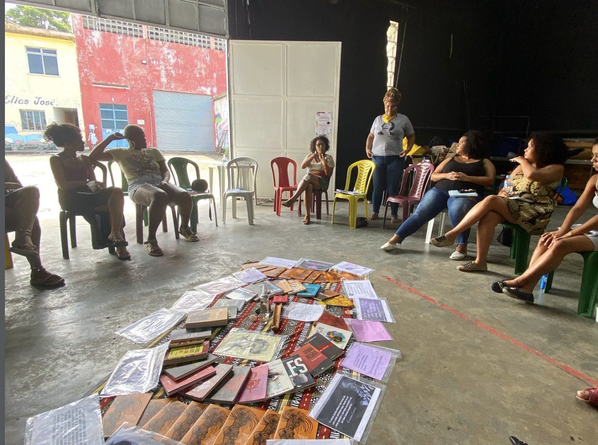

O contexto
Um ano de pandemia, um ano de luta
Refletir sobre essas mortes, e sobre como poderiam ter sido evitadas, é desenhar caminhos que garantam o direito à vida e à saúde de qualidade para mulheres negras, o maior grupo demográfico do país.

O marco teórico
Para além do “direito à escolha”
A pesquisa parte da Justiça Reprodutiva, conceito apresentado pela ativista negra estadunidense Loretta Ross. Compare as duas lentes:
No Brasil, o conceito ganha força entre ativistas negras com organizações e grupos que denunciam violações de direitos reprodutivos, o racismo institucional e a violência obstétrica:
Palpite: quantas das 152 jovens ativistas já conheciam o conceito?
Escolha uma opção. O gráfico já mostra a resposta: 63,58% não conheciam e 36,42% conheciam.
Infográfico 1
Quem são as 152 jovens ativistas negras
O perfil das participantes da pesquisa. Escolha um tema e passe o dedo ou o mouse na legenda e nos quadradinhos: cada quadradinho é 1% das respostas.
Fonte: Pinto, F. Justiça reprodutiva e Covid-19 (2021), Infográfico 1. Percentuais como publicados.
Infográfico 2
As pautas prioritárias depois da pandemia
O que as jovens ativistas negras apontaram como prioridade para a justiça reprodutiva. Filtre por tema ou marque as suas 3 prioridades e compare com as delas.
Ver dados em tabela
E você?
Toque em até 3 pautas no gráfico para marcar as suas prioridades.
Fonte: Pinto, F. Justiça reprodutiva e Covid-19 (2021), Infográfico 2. Cada participante pôde apontar mais de uma pauta.
Vozes da pesquisa
Ativistas participantes da pesquisa

Conquistas e próximos passos
A organização das mulheres negras produz mudança
O Brasil foi o país que mais concentrou mortes de gestantes e puérperas por Covid-19, e os direitos sexuais e reprodutivos viraram “secundários”. Mesmo assim, o movimento de mulheres negras conquistou avanços:
DIU
A continuidade da inserção do DIU e do acesso a serviços de saúde reprodutiva durante a pandemia.
Vacina
A inclusão de gestantes, puérperas e lactantes nos grupos prioritários da vacinação contra a Covid-19.
Agora
Manter os direitos conquistados e ampliá-los, fortalecendo o SUS e uma agenda de políticas públicas centrada no direito à vida, à saúde e aos direitos humanos.
Onde o artigo foi publicado
Jovens Investigadores: um olhar geracional sobre a saúde
Revista do projeto Jovens Investigadores em Juventude e Saúde, da Agenda Jovem Fiocruz, que apoiou 10 jovens pesquisadores-ativistas do Rio de Janeiro na investigação de questões de saúde ligadas aos seus territórios. O projeto teve apoio do Programa Inova Fiocruz (edital 2019, Ideias Inovadoras).
- 06Luta, Ciência e Pandemia
- 10A solidariedade nos fará menos solitários
- 14Justiça reprodutiva e Covid-19: um ano de lutas de jovens ativistas negras
- 18Jovens travestis e transexuais na escola ou no campo de guerra?
- 20Onde fica a saúde quando passa a polícia?
- 22Tuberculose e seu legado social
- 25Gênero, raça e classe: debatendo saúde na periferia do capital
- 28A representação da Baixada Fluminense no audiovisual
- 30A juventude se vê no audiovisual
- 32Telemarketing na Maré
- 35Demonstrar afeto lésbico nas favelas é uma realidade palpável?
- 38RAP da Saúde: intersetorialidade como tecnologia social
- 40Diário de experiência: pesquisar na pandemia
- 41Mentoria e seus aprendizados
- 44Para onde vamos? Existe uma revolução correndo em nossos olhos